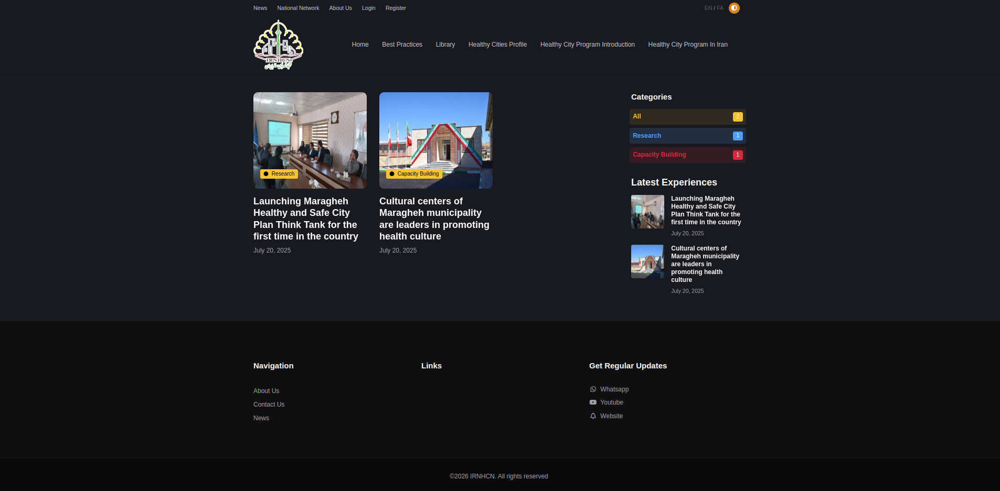
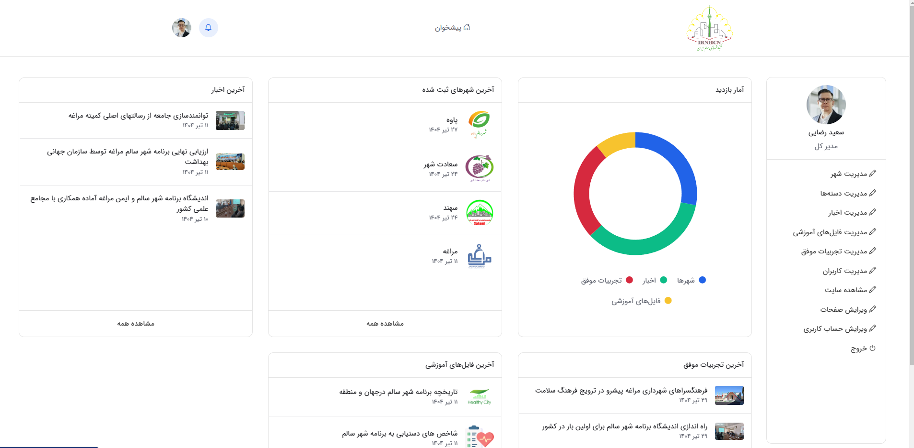
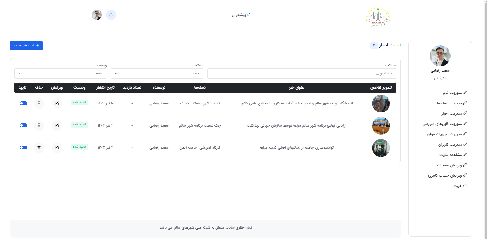

سامانه شهرهای سالم
سامانهای دوزبانه برای معرفی شهرهای سالم، انتشار اخبار، تجربیات و محتوای مرتبط با حوزه شهرهای سالم که امکان مدیریت و بروزرسانی محتوا را از طریق پنل مدیریت فراهم میکند. سیستم شامل بخشهای مدیریت شهرها، اخبار، تجربیات و اطلاعات مرتبط با هر شهر است.
سامانه دوزبانه معرفی و مدیریت محتوای شهرهای سالم
این پروژه یک سامانه تحت وب برای معرفی و ارائه محتوای مرتبط با شهرهای سالم است که اطلاعات شهرها، اخبار، تجربیات و مطالب مرتبط را در یک بستر یکپارچه در اختیار کاربران قرار میدهد.
محتوای سامانه شامل اطلاعات و معرفی شهرهای سالم، اخبار و رویدادهای مرتبط و تجربیات ثبتشده است که امکان مدیریت و بروزرسانی آنها از طریق پنل مدیریت فراهم شده است.
سامانه به صورت دوزبانه طراحی شده و محتوای بخشهای مختلف در دو زبان قابل ارائه است. ساختار مدیریت محتوا نیز به گونهای پیادهسازی شده که مدیر سامانه بتواند اطلاعات شهرها و محتوای منتشرشده را مدیریت و بروزرسانی کند.
قابلیتهای اصلی سیستم
معرفی شهرهای سالم
ارائه اطلاعات و محتوای مرتبط با شهرهای سالم و نمایش اطلاعات هر شهر در سامانه.
انتشار اخبار
انتشار و مدیریت اخبار و مطالب مرتبط با حوزه شهرهای سالم در سامانه.
ثبت و ارائه تجربیات
مدیریت و نمایش تجربیات و مطالب مرتبط با فعالیتها و اقدامات انجامشده در شهرهای سالم.
سامانه دوزبانه
ارائه محتوای سامانه در دو زبان و امکان مدیریت محتوای چندزبانه برای بخشهای مختلف سایت.
پنل مدیریت محتوا
مدیریت اطلاعات شهرها، اخبار، تجربیات و سایر محتوای قابل انتشار از طریق پنل مدیریت.
مدیریت و بروزرسانی محتوا
امکان ایجاد، ویرایش و مدیریت محتوای سامانه بدون نیاز به تغییر مستقیم ساختار صفحات.
جریان مدیریت و انتشار محتوا
اطلاعات مربوط به شهرهای سالم در سامانه ثبت و مدیریت شده و برای نمایش در سایت آماده میشوند.
اخبار، تجربیات و مطالب مرتبط توسط پنل مدیریت ایجاد و اطلاعات موردنیاز برای انتشار ثبت میشوند.
محتوای موردنیاز در زبانهای تعریفشده مدیریت شده و نسخه مناسب هر زبان برای کاربران نمایش داده میشود.
محتوای مدیریتشده در بخشهای مربوط به شهرها، اخبار و تجربیات در سایت نمایش داده میشود.
مدیر سامانه میتواند اطلاعات و مطالب منتشرشده را از طریق پنل مدیریت ویرایش و بروزرسانی کند.
تکنولوژی و ساختار فنی
سامانه با استفاده از Django توسعه داده شده و منطق اصلی سیستم برای مدیریت شهرها، اخبار، تجربیات و محتوای سامانه در سمت Backend پیادهسازی شده است.
رابط کاربری با استفاده از Django Templates و Bootstrap توسعه داده شده و برای ایجاد تعاملات و کنترل بخشهای مختلف صفحات از JavaScript در کنار HTML و CSS استفاده شده است.
ساختار چندزبانه سامانه امکان ارائه محتوای سایت در دو زبان را فراهم کرده و پنل مدیریت نیز برای ایجاد، ویرایش و مدیریت محتوای قابل انتشار در بخشهای مختلف سامانه مورد استفاده قرار میگیرد.
نمایی از بخشهای پروژه
بخشی از رابط کاربری و پنلهای مدیریتی سامانه.


